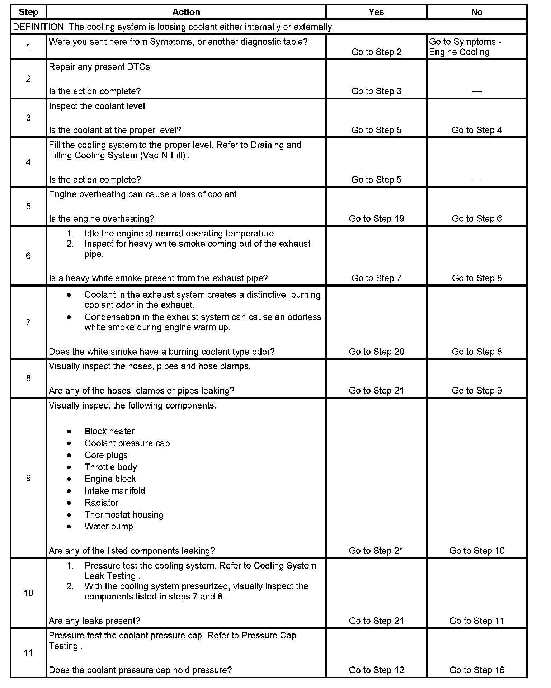
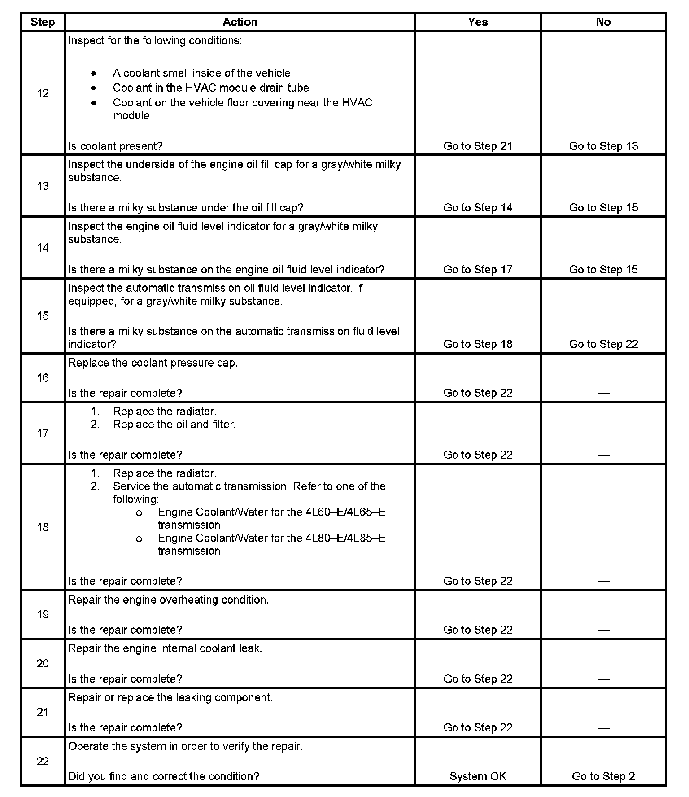

Operation CHARM
: Car repair manuals for everyone.
Home
>>
Cadillac
>>
2007
>>
Escalade ESV AWD V8-6.2L
>>
Repair and Diagnosis
>>
Engine, Cooling and Exhaust
>>
Cooling System
>>
Testing and Inspection
>>
Symptom Related Diagnostic Procedures
>>
Loss of Coolant
Loss of Coolant
Loss of Coolant
Step 1 - Step 11:

Step 12 - Step 22:
